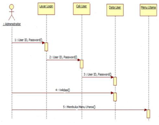

NIM: 1811500085
NAMA: Maulana Malik Fajari
KELOMPOK: TI6A
-Diagram Sequence
Diagram sequence merupakan salah satu yang menjelaskan bagaimana suatu operasi itu dilakukan; message (pesan) apa yang dikirim dan kapan pelaksanaannya.
Diagram ini diatur berdasarkan waktu. Objek-objek yang berkaitan dengan proses berjalannya operasi diurutkan dari kiri ke kanan berdasarkan waktu terjadinya
dalam pesan yang terurut.
Diagram sequence menampilkan interaksi antar objek dalam dua dimensi. Dimensi vertikal adalah poros waktu, dimana waktu berjalan ke arah bawah.
Sedangkan dimei horizontal merepresentasikan objek-objek individual. Tiap objek (termasuk actor) tersebut mempunyai waktu aktif yang direpresentasikan dengan
kolom vertikal yang disebut dengan lifeline. Pesan (message) direpresentasikan sebagai panah dari satu lifeline ke lifeline yang lain. Message digambarkan sebagai
garis berpanah dari satu objek ke objek lainnya. Pada fase desain berikutnya, messagnse akan dipetakan menjadi operasi/metoda dari class.
Diagram sequence ini biasa digunakan untuk menggambarkan skenario atau rangkaian langkah – langkah yang dilakukan sebagai respon dari sebuah event untuk menghasilkan
ouput tertentu, dan perubahan apa saja yang terjadi secara internal dan ouput apa yang dihasilkan.
Diagram sequence mendeskripsikan bagaimana entitas dalam sistem berinteraksi, termasuk pesan yang digunakan saat interaksi. Semua pesan dideskripsikan dalam
urutan dari eksekusi. Diagram sequence berhubungan erat dengan diagram use case , dimana 1 use case akan menjadi 1 diagram sequence.
Diagram sequence memiliki elemen-elemen sebagai berikut:
-Actor yaitu orang atau sistem eksternal lainnya yang menerima manfaat atau menggunakan sistem.
-Object yaitu objek yang terlibat dalam sistem.
-Lifeline yaitu sebuah garis yang menggambarkan masa hidup dari sebuah objek dalam sequence diagram.
Execution occurrence yaitu sebuah persegi panjang yang menggambarkan waktu terjadinya pengiriman/penerimaan pesan.
-Message yaitu informasi yang mengalir dari satu objek ke objek lainnya.
-Guard condition yaitu suatu persyaratan yang harus terpenuhi agar suatu pesan dapat dikirimkan.
-Object destruction menggambarkan akhir dari sebuah lifeline object.
-Frame menyatakan konteks dari diagram sequence.
Persamaan diagram sequence dan diagram collaboration/communication:
Menampilkan objek yang berpartisipasi dalam aliran melalui use case dan pesan yang dikirim antar objek.
Perbedaan diagram sequence dan diagram collaboration/communication:
diagram sequence
Disusun berdasarkan urutan waktu.
Berguna jika seseorang ingin mereview aliran logic melalui skenario.
Menyediakan cara untuk melihat skenario dalam urutan berbasis waktu : apa yang terjadi pertama, apa yang terjadi berikutnya, dll. Digunakan untuk menentukan message ordering
diagram collaboration/communication
Diatur sekitar objek itu sendiri.
Berguna jika kita ingin menilai dampak perubahan. Sangat mudah untuk melihat pada diagram collaboration/communication, objek yang berkomunikasi dengan objek yang lain.
Jika kita ingin mengubah objek, kita dapat dengan mudah melihat objek-objek lain yang mungkin akan terpengaruh.
Memberikan gambaran besar untuk skenario, karena mereka diorganisir sekitar bagaimana objek me-link ke satu dan yang lainnya. Digunakan untuk menentukan class relationships
Contoh Diagram Sequence:

Pada contoh diagram sequence di atas terdapat 1 administrator dan 3 objek, yaitu: Layar login, cek user, data user, menu utama.
Pertama-tama administrator akan masuk ke layar login dengan menggunakan User ID dan Password().
Dari Layar login, admin akan melakukan cek user dengan memasukkan User ID dan Password().
Setelah melakukan cek user, admin akan memasukkan user ID dan password sekali lagi untuk melihat data user.
User ID dan Password yang dimasukkan admin sebanyak 3 kali, digunakan untuk melakukan validasi. Validasi ini bertujuan untuk membuka menu utama().